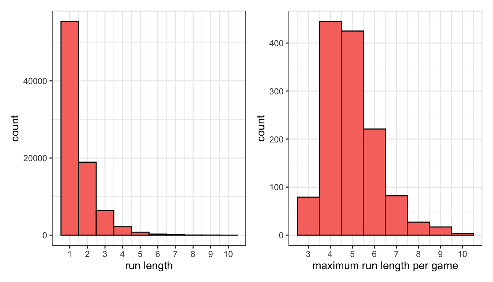

“It’s a game of runs. We withstood theirs,” said Miami Heat star Jimmy Butler after a key postseason win in late April. Two weeks later in New York, before another pivotal game, Butler again explained that “this is a game of runs for both sides,” and later his opponent Jalen Brunson chimed in that “it’s a game of runs, things are gonna happen that aren’t gonna go your way.” A hundred miles south down I-95, Philadelphia 76ers coach Doc Rivers recited the same phrase: “It’s going to be a game of runs. We’ve got to sustain their runs,” he said after his team’s win.
These “runs,” of course, are the short but influential stretches of nearly every game during which one team heavily outscores the other. It’s a succinct way to describe the fan experience, as these intervals and their impact on the ultimate outcome are usually our most vivid memories. And it’s also become somewhat of a narrative crutch during podium post-mortems for players and coaches who can attribute results to the nature of the sport – perhaps the game wouldn’t have slipped through their fingers if it wasn’t so darn runny.
But it also feels like calling basketball a game of runs over and over again implies that the sport’s flow is more volatile than you might otherwise assume, and that catalyzing these sequences for your team (or stifling them for your opponent) is a component of the sport that’s not captured simply by having good players. So: does NBA basketball feature more runs than you would expect from two teams with hundreds of alternating opportunities to score every game?
Let us examine the 1300 games from the 2021-2022 NBA season using play-by-play data hosted on Kaggle. We define a possession for a team as any continuous time period with the ball (so offensive rebounds extend possessions as opposed to incrementing them), and a successful possession as scoring any amount of points in that timeframe, whether that be a single free throw or a four-point play. We can then tally how many uninterrupted scoring possessions teams can achieve before their opponent logs a bucket for themselves.
As the histogram below demonstrates, most runs are just a single scoring possession that is eventually answered by the other team. After that, about one third of existing runs are extended an extra scoring possession at each step (which tightly follows the implied theoretical frequencies from the empirical 50% scoring rate). Each game typically has a longest run of four to five unanswered baskets.

To test whether these runs are self-sustaining, we can overwrite the result of each possession with a simulation using either a basic scoring rate or a matchup-specific one. If there truly are longer runs than we’d expect from treating each possession independently, then the simulation would not be able to capture the game’s “momentum,” since it is unaware of the results of previous possessions.
However, the distributions from the simulation closely follow those from the empirical results, which leaves us no reason to believe that NBA basketball is any runnier than you’d expect from a game with so many scoring opportunities, matching the conclusion from a 2019 paper with similar methodology.

If the existence of momentum is difficult to prove, then perhaps we should stop faulting teams for not being able to claim it exclusively for themselves. In particular, it’s popular to criticize coaches for failing to call a timeout in the middle an opponent’s run. Fans and media alike recently piled on Celtics coach Joe Mazzulla for not intervening more often during his team’s worst stretches in their playoff losses to Butler’s Heat.

But if we examine when timeouts were used during opponents’ runs in the dataset, we find that they do little to change the events that immediately follow. For each minimum length of unanswered scoring possessions, we split runs into those that featured an opponent’s timeout at that juncture and those that didn’t. For example, for every run that lasted at least three scores, we can note if a timeout was called after the third score and compare the remainder of those runs. The table below shows that runs continue at approximately the same length, regardless of whether a timeout was used.
initial run length | timeout called | n | average remaining run |
|---|---|---|---|
1 | no | 61,991 | 0.53 |
yes | 1,492 | 0.53 | |
2 | no | 19,322 | 0.53 |
yes | 2,101 | 0.54 | |
3 | no | 5,498 | 0.54 |
yes | 1,154 | 0.58 | |
4 | no | 1,460 | 0.57 |
yes | 453 | 0.54 | |
5 | no | 415 | 0.59 |
yes | 114 | 0.51 | |
6 | no | 111 | 0.56 |
yes | 44 | 0.59 |
It should be noted that this type of analysis falls far short of the requirements for a causal experiment, as coaches do not randomly use timeouts but rather must assess whether their team’s current plight is worth burning one from their limited supply. However, more rigorous studies reached the same conclusion, and in a broader sense the experimentation above is quite similar to the many investigations into the existence of a “hot hand” across various sports, most of which attribute such phenomena to pure randomness.
Those studies usually lose their influence somewhere between the classroom and the locker room, which is why we’ll probably continue hearing NBA players proclaim that their sport is a game of runs when prompted to recap their team’s performance. Just once though it’d be nice for one of them whisper under his breath, “…due to random variation.”
All code used for the analysis is below.
Code
library(tidyverse)
library(lubridate)
library(patchwork)
getmode <- function(x) {
uniqx <- unique(x)
uniqx[which.max(tabulate(match(x, uniqx)))]
}
# unzipped from https://www.kaggle.com/datasets/xocelyk/nba-pbp
pbp_raw <- read_csv("/Users/walkerharrison/Downloads/all_games.csv")
# turning play-by-play data into possessions
pbp <- pbp_raw %>%
mutate(date = as_date(Date, format = "%m/%d/%Y")) %>%
mutate(month = month(date),
day = day(date),
year = year(date)) %>%
# drill down to single NBA season
filter((year == 2021 & month >= 9) | (year == 2022 & month <=8)) %>%
# convert game clock display to seconds remaining
mutate(qtr_seconds_remaining = lubridate::hour(Time)*60 + lubridate::minute(Time)) %>%
filter(is.na(AwayEvent) | is.na(HomeEvent)) %>%
# remove non-action events
filter(!str_detect(coalesce(AwayEvent, HomeEvent, ""), "enters the game")) %>%
filter(!str_detect(coalesce(AwayEvent, HomeEvent, ""), "Instant Replay")) %>%
filter(!str_detect(coalesce(AwayEvent, HomeEvent, ""), "kicked ball")) %>%
# note upcoming timeouts before removing them
mutate(home_timeout_after = str_detect(coalesce(lead(HomeEvent), ""), "timeout"),
away_timeout_after = str_detect(coalesce(lead(AwayEvent), ""), "timeout")) %>%
filter(!str_detect(coalesce(AwayEvent, HomeEvent, ""), "timeout")) %>%
# data formatted so that events attributed to possessing team
mutate(possession = ifelse(!is.na(AwayEvent), AwayName, HomeName)) %>%
group_by(GameID, Possession) %>%
# strips out occasional odd possession changes (loose balls?)
mutate(possession = getmode(possession)) %>%
group_by(GameID) %>%
# trick for assigning key column to clusters of data
mutate(possession_id = 1 + cumsum(possession != lag(possession, default = first(possession)))) %>%
group_by(date, game = GameID, period = Period, home = HomeName, away = AwayName, possession_id, possession) %>%
# summary info for each possessions
summarize(start = min(qtr_seconds_remaining),
end = max(qtr_seconds_remaining),
end_home_score = max(HomeScore),
end_away_score = max(AwayScore),
# mark timeout if following end of possession
home_timeout_after = last(home_timeout_after) == 1,
away_timeout_after = last(away_timeout_after) == 1) %>%
group_by(game) %>%
# keep track of score
mutate(score = ifelse(possession == home, end_home_score > lag(end_home_score, default = 0),
end_away_score > lag(end_away_score, default = 0))
) %>%
ungroup() %>%
# team identities required for matchup modeling
mutate(home_poss = possession == home,
offense = ifelse(home_poss, home, away),
defense = ifelse(home_poss, away, home))
rm(pbp_raw)
# turning possessions into runs
runs <- pbp %>%
filter(score) %>%
# uncomment to treat every quarter as a distinct game
# mutate(game = paste0(game, period)) %>%
group_by(game) %>%
# trick for assigning key column to clusters of data
mutate(run_id = 1 + cumsum(offense != lag(offense, default = first(offense)))) %>%
group_by(game, offense, defense, home_poss, run_id) %>%
# aggregate info over runs
summarize(length = n(),
# determine when first (if any) opponent timeout was used during run
timeout = min(c(Inf, which(ifelse(home_poss, away_timeout_after, home_timeout_after)))),
start_period = min(period),
# determine if run spans across multiple quarters
period_change = min(c(Inf, which(lead(period) != period))))
# empirical distributions of runs and max runs per game
emp1 <- runs %>%
ggplot(aes(length)) +
geom_bar(width = 1, col = "black", fill = "#F8766D") +
scale_x_continuous(breaks = 1:max(runs$length)) +
theme_bw() +
labs(x = "run length")
emp2 <- runs %>%
group_by(game) %>%
summarize(max_run = max(length)) %>%
ggplot(aes(max_run)) +
geom_bar(width = 1, col = "black", fill = "#F8766D") +
scale_x_continuous(breaks = 1:max(runs$length)) +
theme_bw() +
labs(x = "maximum run length per game")
emp1 + emp2
# model that finds matchup-specific scoring rate
mod <- glm(score ~ home + offense + defense, family = binomial(), data = pbp)
# overwriting results with simulation using those rates
pbp_sim <- pbp %>%
mutate(fitted = predict(mod, type = "response"),
score = as.logical(rbinom(nrow(.), 1, fitted))
)
# turning simulated possessions into runs
runs_sim <- pbp_sim %>%
filter(score) %>%
# uncomment to treat every quarter as a distinct game
# mutate(game = paste0(game, period)) %>%
group_by(game) %>%
# trick for assigning key column to clusters of data
mutate(run_id = 1 + cumsum(offense != lag(offense, default = first(offense)))) %>%
group_by(game, offense, defense, home_poss, run_id) %>%
# aggregate info over runs
summarize(length = n())
combo <- bind_rows(runs %>% mutate(type = "empirical"),
runs_sim %>% mutate(type = "simulated"))
# simulated distributions of runs and max runs per game
sim1 <- combo %>%
ggplot(aes(length)) +
geom_bar(width = 0.8, col = "black", aes(fill = type), position = "dodge") +
scale_x_continuous(breaks = 1:max(combo$length)) +
theme_bw() +
labs(x = "run length")
sim2 <- combo %>%
group_by(game, type) %>%
summarize(max_run = max(length)) %>%
ggplot(aes(max_run)) +
geom_bar(width = 0.8, col = "black", aes(fill = type), position = "dodge") +
scale_x_continuous(breaks = 1:max(combo$length)) +
theme_bw() +
labs(x = "maximum run length per game")
sim1 + sim2 + plot_layout(guides = "collect")
# minimum length runs after which to call a timeout
to_times <- 1:10
# iterating over all possibilities
to_effect <- map(to_times, ~{
to_time <- .x
runs %>%
# runs must be at least that long and not have a time out yet
filter(length >= to_time,
# and not have a time out yet
timeout >= to_time,
# and not be in 4th quarter or OT (different TO usage)
start_period < 4) %>%
# calculate length after the (potential) timeout
mutate(length2 = length - to_time) %>%
group_by(timeout = timeout == to_time) %>%
# calulate average remaining length
summarize(n = n(),
avg_remaining_run = mean(length2)) %>%
mutate(to_time = to_time)
}) %>%
bind_rows()
# summary table of TOs
to_table <- to_effect %>%
filter(to_time < 7) %>%
transmute(`initial run length` = to_time,
`timeout called` = timeout,
n,
`average remaining run` = round(avg_remaining_run, 2))
save(emp1, emp2, sim1, sim2, to_table, file = "runs_output.Rdata")